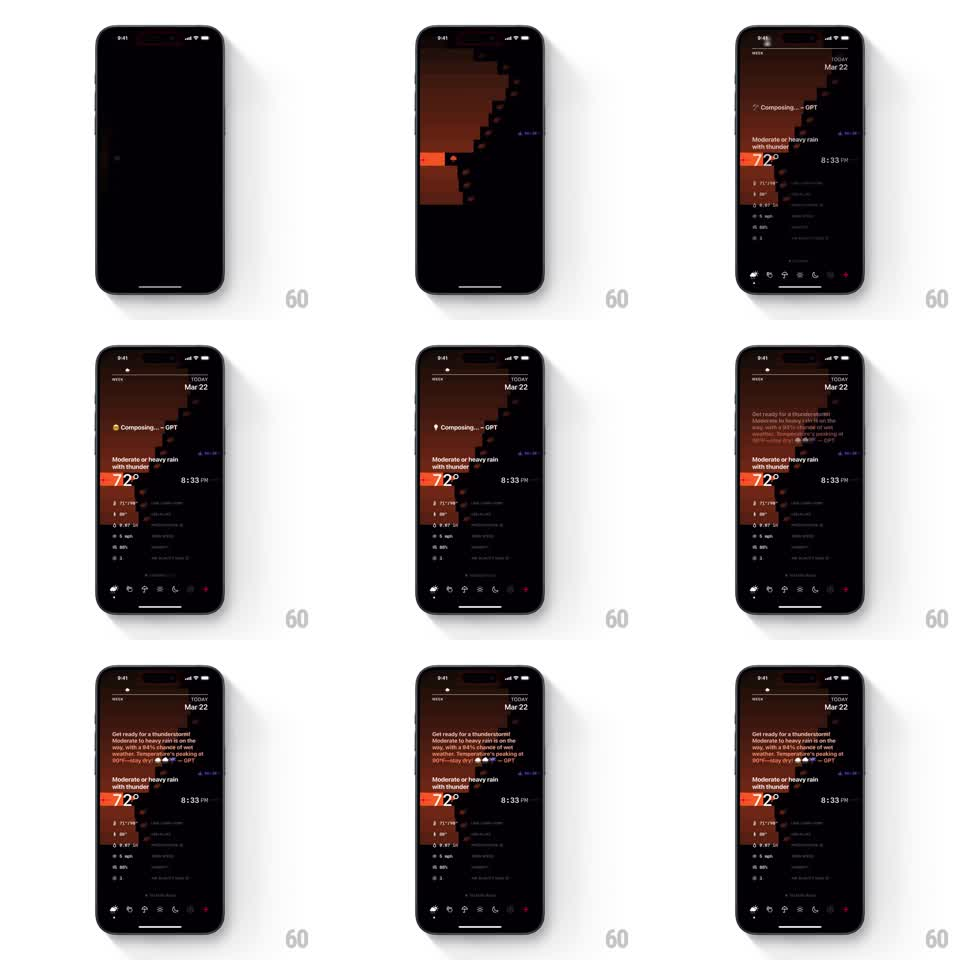

Media
Frame-by-frame

Rebuild this interaction 1:1: Lume's loading sequence - a pixel-art landscape draws itself in blocks, a "Composing... - GPT" status pulses, then the dashboard materializes and the AI summary types itself out character by character.

Rebuild this interaction 1:1: Lume's loading sequence - a pixel-art landscape draws itself in blocks, a "Composing... - GPT" status pulses, then the dashboard materializes and the AI summary types itself out character by character.
## Integration
Integration: stack-agnostic spec - springs given as stiffness/damping, timed motions as duration + curve; map every value to your framework and animation library of choice.
## Scene
Black screen -> an orange pixel mountain landscape assembles in chunky blocks -> the dashboard appears: "TODAY Mar 22" header, "Composing... - GPT" status pill, condition title "Moderate or heavy rain with thunder", giant "72°", time "8:33 PM", stat rows, bottom tab bar. Finally the AI summary paragraph types in at the top ("Get ready for a thunderstorm! Moderate or heavy rain is on the way, with a 94% chance of wet weather... - GPT").
## Motion spec
Pattern: block-assembled pixel landscape with typed AI reveal.
- Landscape assembly: pixel blocks (~16pt cells) pop in with a coarse random order (each block fade+scale 0.5 -> 1, 120ms, ~40 blocks over 800ms) forming the mountain silhouette and sky bands.
- The status pill ("Composing... - GPT") fades in and pulses (opacity 0.5 -> 1, 900ms loop) with a cycling ellipsis.
- Dashboard elements stagger in (header, condition, temperature, stats: 80ms apart, each rising 12pt + fade, spring ~300/20); the temperature counts up to its value (0 -> 72 over 600ms, ease-out).
- The status pill swaps to the typing summary: characters appear at ~30ms intervals with a block cursor; emoji and the "- GPT" attribution type inline.
- Loading complete: the pill's pulse stops, the cursor blinks twice and disappears.
## Calibration
- Block randomness is seeded per load but must always complete the silhouette edges first.
- The typed summary replaces the status pill in place - same position, no layout jump.
## Reduced motion
Landscape fades in whole (400ms); summary appears fully typed (300ms fade).
## Don't miss
- The pixel blocks are sharp squares - no rounded corners during assembly.
- Keep the black background pure until the landscape covers it.